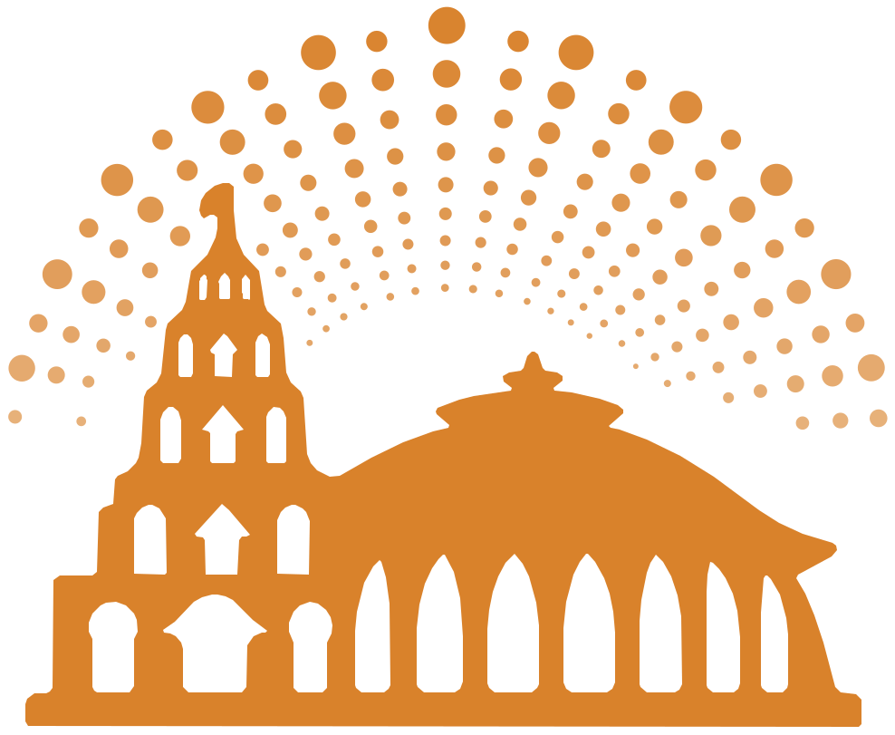

Project
NANDA
Open infrastructure and research for agents that discover, verify, and coordinate across independent systems.

Stakeholder review
This page is currently shared for stakeholder review. Enter the access key to continue.
An open research community
Kumbh Labs brings together researchers, volunteers, practitioners, and local communities to explore open AI systems that matter in the real world.
Scroll to explore ↓
One collaboration, three connected strengths
Open infrastructure and research for agents that discover, verify, and coordinate across independent systems.
A practical research environment for multilingual, decentralised AI at public scale.
Grounded innovation: local context, community learning, field studies, and pathways to real use.
Kumbh Labs community
Explore agent discovery, verifiable identity, secure coordination, and interoperability—shared challenges for systems where many agents, organisations, and communities work together.
Learn from real constraints: multilingual and voice-first interaction, intermittent connectivity, accessibility, navigation, service discovery, and dense public environments.
Find a pathway into Project NANDA’s global chapters, workshops, researchers, and open-source contributors—built for shared learning and substantive participation.
Start with a real challenge, community insight, and local knowledge; then explore what can be learned, built, and responsibly carried forward through the Kumbhathon ecosystem.
A community-led research practice
“Bring a question, a local need, a lived experience, or an idea worth exploring.”
Together, we can shape it into a field study, community build, open contribution, or practical prototype—with learning that remains useful beyond the first demonstration.
Participation
Every pathway creates room to learn in the open, contribute with care, and make something useful with others.
01 / Learning + contribution
Support a focused cohort working on a real technical question. Fellows learn with mentors and contribute directly to open agent infrastructure.
02 / Research
Explore a question around trust, edge AI, multilingual interaction, agent safety, or public digital infrastructure with people and places in view.
03 / Shared practice
Bring a public-interest question or organisational learning need into a small, thoughtful build—centred on safety, interoperability, and care.
04 / Startup + community
Work on a public or urban challenge with problem access, mentor support, and a path to learn from a locally grounded field trial.
05 / Community support
Resource work that matters: accessibility, multilingual public assistance, youth learning, local livelihoods, and shared digital infrastructure.
Stories from the community
Fellowship / 2026
A three-month remote fellowship supported a cohort of 10+ fellows working on live open-source agent infrastructure. It paired mentorship and stipends with real contributions to agent discovery, verifiable identity, and secure coordination.
Read the story ↗Open build / Nanda Town
Public contributions in Nanda Town show contributors tackling practical protocol problems such as delegatable authorization, privacy, and cascading revocation—with proposals that can be technically reviewed and merged.
Explore Nanda Town ↗Ground impact / Nashik
Kumbhathon’s 2015 work helped lead to Digital Impact Square in Nashik. It is a useful reminder that the goal is not an event—it is lasting local innovation capacity.
See Kumbhathon impact ↗Start with a question
Tell us about the people, place, or question you care about. We will help find a thoughtful way to explore it with the community.
Connect ↗